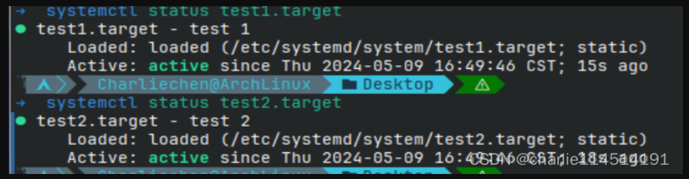

Linux进程启动与Systemd
Linux用户空间的启动
我们都知道，Linux在内核的初始化自身的流程结束后，就会将程序流的运行转到用户态，也就是进入init进程流之后，他会按照这个流程进行初始化：
- init进程初始化
- 基础的底层服务：比如说udevd和syslogd
- 网络配置
- 中高层服务，比如说cron和一些打印服务乱七八糟的
- 登录会话
Systemd与init进程
init是Linux上的一个用户空间程序，她负责启动和终止系统中一些基础的服务。
我们现在大多数使用的都是systemd这个init程序，这里我们就不费心介绍其他的了（值得一提的是Red Hat Enterpprise Linux等一些发行版使用的是SystemV Init）
systemd包含了一系列的启动流程：比如说cron啊，inetd等，它可以选择延迟开启，意味着——只有需要了我们才会加载，这种惰式加载随处可见！
Systemd加载的步骤：
- systemd加载配置信息
- systemd判定启动目标，它通常是default.target
- 判定启动目标的所有依赖关系
- 激活所需要的组件然后启动目标
- 现在systemd将会响应系统信息然后激活其他组件
systemd的启动很灵活，争取将启动模块化，降低耦合度！
单元类型与单元
他不仅仅负责处理进程和服务，还可以挂载文件系统，监控网络套接字和类型时系统。这些功能我们称之为：单元；他们的类别是单元类型；开启一个单元被称为激活！
查询man systemd来查看手册！
- 目标单元 ：控制Unix传统服务进程
- 挂载单元：控制文件系统的挂载
- 目标单元：控制其余单元
Service units, which start and control daemons and the processes they consist of. For details, see
systemd.service(5).
Socket units, which encapsulate local IPC or network sockets in the system, useful for
socket-based activation. For details about socket units, see systemd.socket(5), for details on
socket-based activation and other forms of activation, see daemon(7).
Target units are useful to group units, or provide well-known synchronization points during
boot-up, see systemd.target(5).
Device units expose kernel devices in systemd and may be used to implement device-based
activation. For details, see systemd.device(5).
Mount units control mount points in the file system, for details see systemd.mount(5).
Automount units provide automount capabilities, for on-demand mounting of file systems as well as parallelized boot-up. See systemd.automount(5).
Timer units are useful for triggering activation of other units based on timers. You may find
details in systemd.timer(5).
Swap units are very similar to mount units and encapsulate memory swap partitions or files of the
operating system. They are described in systemd.swap(5).
Path units may be used to activate other services when file system objects change or are modified.
See systemd.path(5).
Slice units may be used to group units which manage system processes (such as service and scope
units) in a hierarchical tree for resource management purposes. See systemd.slice(5).
Scope units are similar to service units, but manage foreign processes instead of starting them as
well. See systemd.scope(5).依赖关系
一些服务需要为更加上层的服务提供自己的服务，同理，也就会一些服务是需要下层的服务来支持。这里，就很自然的产生了依赖关系：
- Request:不可缺少的关系，如果要求Request的单元失败那么系统就会关闭这个被依赖的单元
- Wants:表达了指示用于激活，单元被激活的时候，Wants类型的依赖关系也会被激活
- Requisite：标识必须在激活之前对应的单元被激活，这个关系最强
- Conflict：表达的是冲突——两者互斥
依赖的顺序可以使用
- Before：当前的单元会在Before中列出的单元之前启动，比如说在foo.target中写下bar.target的时候，footarget先启动
- After：那就是相反！
配置地点
主要在两个地方：/usr/lib/systemd/system作为系统的单元目录和系统配置目录（/etc/systemd/system），简单的讲：我们不要改动系统的单元目录，因为它由系统维护，我们想要保存自定义设置，还是改动后者！
使用systemctl来查看systemd服务状态
systemctl就是看systemd的工作状态的：
systemctl list-units当然，其他的常见用法应该说是看手册的事情：
动手试试看
我们可以写一个很简单的服务文件：
test1.target
[Unit]
Description=test 1test2.target
[Unit]
Description=test 2
Wants=test1.target这两个文件扔到/etc/sysemd/system下面去，然后
systemctl start test2.target
Comments And Further Reading
udevd
啥是udevd呢？如果熟悉Linux2.6就会知道他是取代了之前Linux内核的devfs出现的——为了管理设备的一个子系统。现在的系统会采取监听uevent的方式来进行对/dev设备的管理。有趣的是，udevd运行在用户态而不是核心态。
- 现在 udev 只为那些连接到 Linux 操作系统的设备产生设备文件。udevd能通过定义一个 udev 规则 (rule) 来产生匹配设备属性的设备文件，这些设备属性可以是内核设备名称、总线路径、厂商名称、型号、序列号或者磁盘大小等等。
- 动态管理：当设备添加 / 删除时，udev 的守护进程侦听来自内核的 uevent，以此添加或者删除 /dev下的设备文件，所以 udev 只为已经连接的设备产生设备文件，而不会在 /dev下产生大量虚无的设备文件。
- 自定义命名规则：通过 Linux 默认的规则文件，udev 在 /dev/ 里为所有的设备定义了内核设备名称，比如 /dev/sda、/dev/hda、/dev/fd等等。由于 udev 是在用户空间 (user space) 运行，Linux 用户可以通过自定义的规则文件，灵活地产生标识性强的设备文件名，比如 /dev/boot_disk、/dev/root_disk、/dev/color_printer等等。
简单阐述一下流程吧！
当udevd从Kernel中监听到了一个udevent事件的时候，他会判断这是怎样的uevent
A. 如果是添加：
他会在配置文件里查找规则文件所在目录！然后在规则目录里按顺序查询所有规则文件。
A.1 如果有所匹配那么按照匹配的规则
在/dev/下为该设备产生相应的设备文件
B.否则则会用内核设备名称作为设备文件\
B. 那就是删除，查找对应的文件设备直接进行删除即可
在 Linux 使用 systemd-udevd 管理你的接入硬件 | Linux 中国 - 知乎 (zhihu.com)
syslogd
任何程序都可以通过syslog记录事件。我们的Syslog可以纪录系统事件，可以写到一个文件或设备中，或给用户发送一个信息。它能记录本地事件或通过网络纪录另一个主机上的事件。
不过，现在我们的发行版都采用其他log作为代替品了。比如说我的ArchLinux是采用了journalctl，自己可以查询自己的发行版采用的系统日志！
cron
定时任务！我们的一些程序是依赖定时器的，举个例子：周期性的备份等